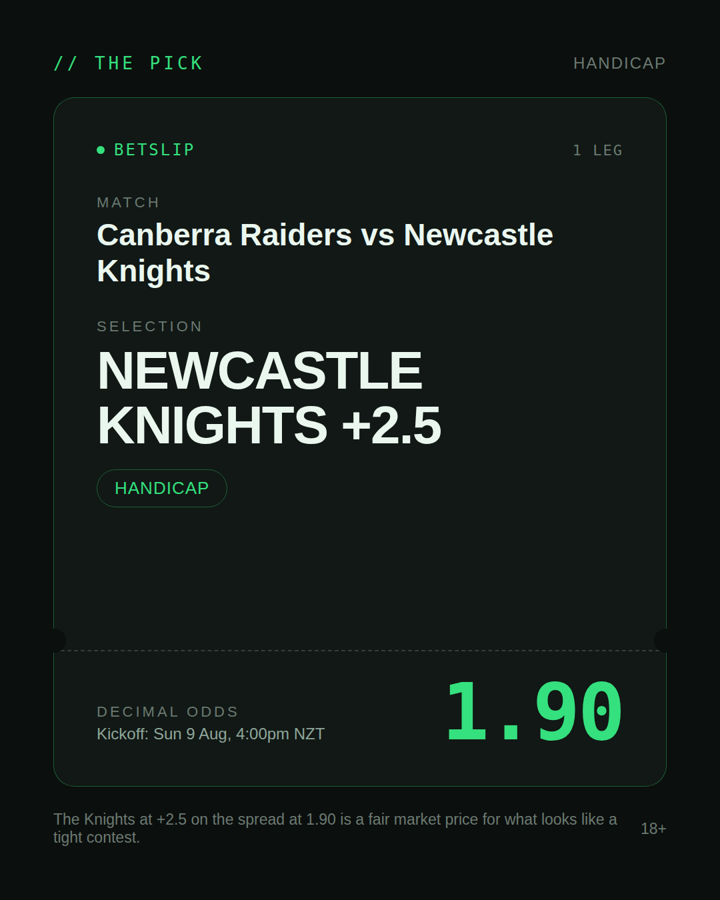
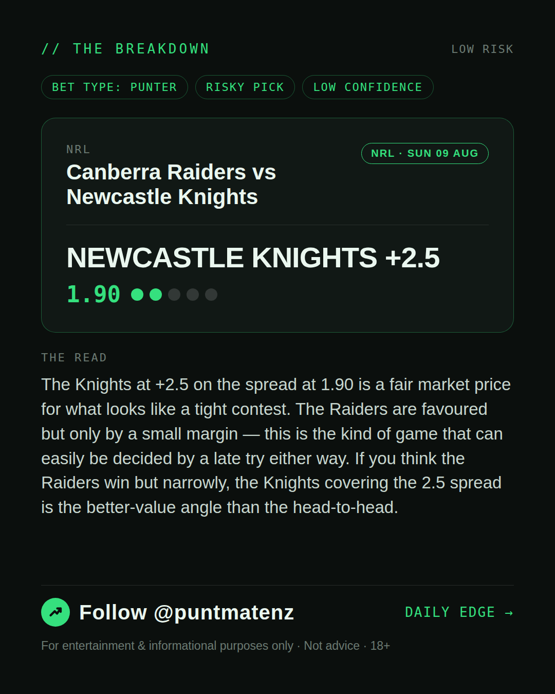
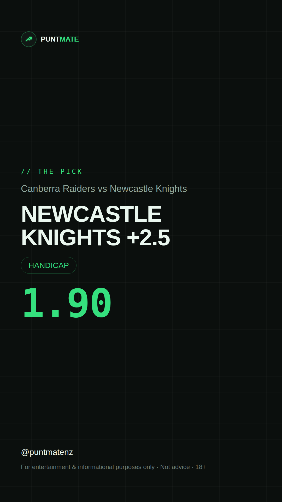

*🎯 PUNTMATE NZ — NRL* 🏟 Canberra Raiders vs Newcastle Knights *PICK:* NEWCASTLE KNIGHTS +2.5 *ODDS:* 1.90 (Handicap) *BET TYPE: PUNTER* _The Knights at +2.5 on the spread at 1.90 is a fair market price for what looks like a tight contest. The Raiders are favoured but only by a small margin — this is the kind of game that can easily be decided by a late try either way. If you think the Raiders win but narrowly, the Knights covering the 2.5 spread is the better-value angle than the head-to-head._ ────────────────── 📲 Join Telegram for daily picks ⚠️ For entertainment & informational purposes only. Not advice. 18+.
🎯 NRL — Canberra Raiders vs Newcastle Knights NEWCASTLE KNIGHTS +2.5 @ 1.90 (Handicap) BET TYPE: PUNTER Solid touch here. Not a lock, but the value's real and the form backs it up. The Knights at +2.5 on the spread at 1.90 is a fair market price for what looks like a tight contest. The Raiders are favoured but only by a small margin — this is the kind of game that can easily be decided by a late try either way. If you think the Raiders win but narrowly, the Knights covering the 2.5 spread is the better-value angle than the head-to-head. Follow for daily value picks → @puntmatenz ⚠️ For entertainment & informational purposes only. Not advice. 18+. #PuntmateNZ #SportsBetting #NZTAB #NRL
| has_pick | True |
| pick_id | 2026-08-08_Canberra_Raiders_vs_Newcastle_Knights |
| run_id | 31277305120 |
| generated_at | 2026-08-08T20:39:42.240787+00:00 |
| post_date | 2026-08-08 |
| match | Canberra Raiders vs Newcastle Knights |
| sport | rugbyleague_nrl |
| sport_label | NRL |
| market | Handicap |
| selection | NEWCASTLE KNIGHTS +2.5 |
| odds | 1.90 |
| bet_type | PUNTER_BET |
| bet_type_label | BET TYPE: PUNTER |
| bet_type_reason | Solid touch here. Not a lock, but the value's real and the form backs it up. The Knights at +2.5 on the spread at 1.90 is a fair market price for what looks like a tight contest. The Raiders are favoured but only by a small margin — this is the kind of game that can easily be decided by a late try either way. If you think the Raiders win but narrowly, the Knights covering the 2.5 spread is the better-value angle than the head-to-head. |
| classification | RISKY_PICK |
| risk | RISKY_PICK |
| confidence | LOW |
| confidence_label | LOW |
| final_explanation | The Knights at +2.5 on the spread at 1.90 is a fair market price for what looks like a tight contest. The Raiders are favoured but only by a small margin — this is the kind of game that can easily be decided by a late try either way. If you think the Raiders win but narrowly, the Knights covering the 2.5 spread is the better-value angle than the head-to-head. |
| public_caution | Keep this one light — the value's there but so is the uncertainty. |
| theme | night |
| carousel_paths | ['data/review/2026-08-08_Canberra_Raiders_vs_Newcastle_Knights/cover.png', 'data/review/2026-08-08_Canberra_Raiders_vs_Newcastle_Knights/tip.png', 'data/review/2026-08-08_Canberra_Raiders_vs_Newcastle_Knights/breakdown.png'] |
| carousel_urls | ['https://raw.githubusercontent.com/kingofthecastle24/puntmate/main/data/cards/2026-08-08_Canberra_Raiders_vs_Newcastle_Knights_night_1_cover.png', 'https://raw.githubusercontent.com/kingofthecastle24/puntmate/main/data/cards/2026-08-08_Canberra_Raiders_vs_Newcastle_Knights_night_2_tip.png', 'https://raw.githubusercontent.com/kingofthecastle24/puntmate/main/data/cards/2026-08-08_Canberra_Raiders_vs_Newcastle_Knights_night_3_breakdown.png'] |
| story_path | data/review/2026-08-08_Canberra_Raiders_vs_Newcastle_Knights/story.png |
| story_url | https://raw.githubusercontent.com/kingofthecastle24/puntmate/main/data/cards/2026-08-08_Canberra_Raiders_vs_Newcastle_Knights_night_story.png |
| intended_platforms | ['telegram', 'instagram_feed', 'instagram_story', 'facebook'] |
| workflow_state | GENERATED |
| has_punter_multi | False |
| has_gambler_multi | False |
| has_degenerate_multi | False |